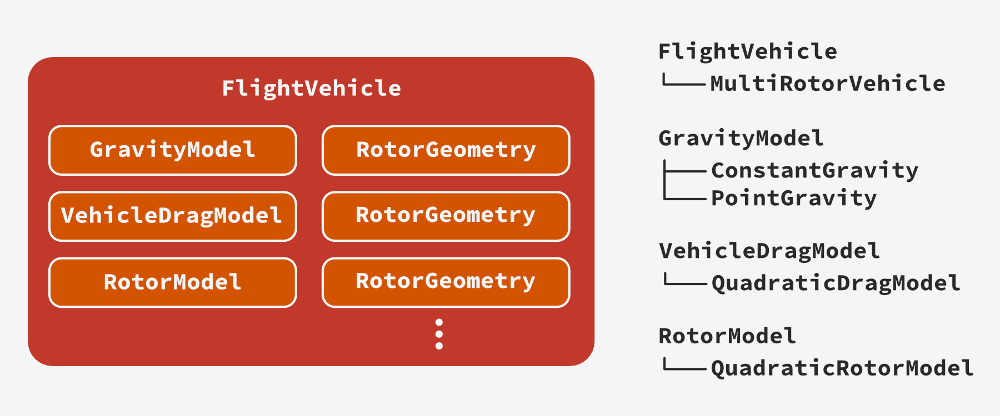
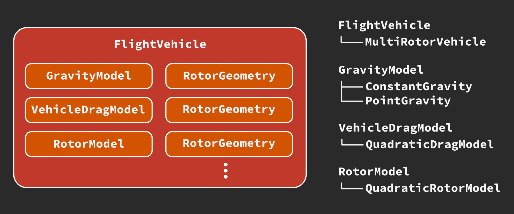

Part 2: Implementation in Archimedes¶
Now that we have a set of equations defining our basic multirotor vehicle model, we can start thinking about implementation. The basic task here is to construct a function \(\dot{\mathbf{x}} = \mathbf{f}(t, \mathbf{x}, \mathbf{u})\) that we can use to simulate the model, where \(\mathbf{x}\) is the 12-element state vector defined above and \(\mathbf{u}\) is the \(N_r\)-element vector of rotor angular velocities (e.g. \(N_r = 4\) for a quadcopter). Without loss of generality, we can require that the inputs \(\mathbf{u}\) be defined as a function of time and state, so that the system can be expressed in the self-contained form \(\dot{\mathbf{x}} = \mathbf{f}(t, \mathbf{x})\).
As a side note, for the sake of simplicity we are assuming that the angular velocities are directly given as inputs. A more complete model might also include motor dynamics, etc. and include more than 12 elements in the state vector. The state vector can also have additional elements related to the aerodynamics model, representing for instance the locations of point vortices or other reduced representations of the flow field. These can be represented in the same \(\dot{\mathbf{x}} = \mathbf{f}(t, \mathbf{x})\) form by augmenting the state vector and dynamics function appropriately.
The most basic approach to constructing such a model is to write a function with this signature that implements the entire model:
import numpy as np
def f(t, x):
"""Monolithic model implementation
Assumes separate functions `dcm`, `u`, `net_forces`, and `euler_kinematics`"""
p_N = x[0:3] # Position of the center of mass in the Newtonian frame N (unused here)
rpy = x[3:6] # Roll-pitch-yaw Euler angles
v_B = x[6:9] # Velocity of the center of mass in body frame B
w_B = x[9:12] # Roll-pitch-yaw rates in body frame (ω_B)
# Convert roll-pitch-yaw (rpy) orientation to the direction cosine matrix.
C_BN = dcm(rpy)
F_B, M_B = net_forces(t, x, u(t, x), C_BN)
# Transform roll-pitch-yaw rates in the body frame to time derivatives of Euler angles
# These are the Euler kinematic equations (1.4-5)
H = euler_kinematics(rpy)
# Time derivatives of roll-pitch-yaw (rpy) orientation
drpy = H @ w_B
# Velocity in the Newtonian frame
dp_N = C_BN.T @ v_B
# Acceleration in body frame
dv_B = (F_B / m) - np.cross(w_B, v_B)
# Angular acceleration in body frame
# solve Euler dynamics equation 𝛕 = I α + ω × (I ω) for α
dw_B = J_B_inv @ (M_B - np.cross(w_B, J_B @ w_B))
# Pack the state derivatives
return np.hstack([dp_N, drpy, dv_B, dw_B, aux_state_derivs])
In Archimedes, this implementation can use standard NumPy functions, which are then “traced” symbolically to construct the CasADi computational graph. This way, it is easy to switch back and forth between vanilla NumPy for development and debugging and Archimedes/CasADi for performance, automatic differentiation, or C code generation.
Although this implementation is straightforward, it is fairly limiting in that changing the models for gravity, vehicle aerodynamics, rotor aerodynamics, etc. requires rewriting the function. Here we will pursue an alternative design using Python classes to construct a modular and composable modeling framework. In short, we will create a set of callable classes that implement well-defined interfaces; then we can construct customized dynamics models by treating these as swappable components.
Composable functors¶
In the lingo of object-oriented programming, a “functor” is an object that can be called like a function.
In Python this can be accomplished by implementing the __call__ method for a class, which allows it to be called with function syntax.
Combining this with the pytree_node concept gives us a simple and powerful pattern for organizing our parameters and functional behavior.
For instance, we can rewrite the 6-dof dynamics function above as follows:
import numpy as np
from archimedes import struct
@struct.pytree_node
class FlightVehicle:
"""Callable dataclass implementation"""
m: float # Vehicle mass
J_B: np.ndarray # Vehicle inertia matrix in body-frame coordinates
def __call__(self, t, x):
"""6-dof dynamics implementation
Still assumes separate functions `dcm`, `u`, `net_forces`, and `euler_kinematics`"""
# Same as above, except now we can use `self.m`, `self.J_B`, etc
While we will use this callable pattern for other components in our model, for consistency with recommended design patterns in Archimedes, we will actually use the name dynamics to implement the ODE right-hand side calculation.
At first, it doesn’t look like we’ve gained much with this approach.
Along with external utility functions dcm and euler_kinematics, we still rely on separately defined functions to compute the inputs and net forces.
We could amend the class definition by making net_forces a method of this class.
Since the 6-dof dynamics are generic, but the multirotor forces are much more specific to this particular flight vehicle, it makes sense to define this method as abstract:
import abc
import numpy as np
from archimedes import struct
@struct.pytree_node
class FlightVehicle(metaclass=abc.ABCMeta):
"""Callable dataclass implementation"""
m: float # Vehicle mass
J_B: np.ndarray # Vehicle inertia matrix in body-frame coordinates
@abc.abstractmethod
def net_forces(self, t, x, u, C_BN):
"""Net forces and moments in body frame B"""
# Empty for abstract base class
def dynamics(self, t, x):
"""6-dof dynamics implementation"""
# ...
This will throw an error if we try to instantiate a FlightVehicle as is, since we haven’t implemented the net_forces method.
We still have to specialize this to the multirotor by summing contributions from gravity, drag, and each of the rotors:
@struct.pytree_node
class MultiRotorVehicle(FlightVehicle):
def net_forces(self, t, x, u, C_BN):
# Sum forces due to gravity, body aerodynamics, and rotors
# ...
If we wanted to, we could add a second class for a fixed-wing vehicle that replaced the rotor models with engines, added flight control surfaces, and so on.
We could also add a third class for a satellite that implemented appropriate reference frame transformations, thruster models, etc.
Each of these would reuse the generic part of the code that deals with 6-dof kinematics, implemented in the base class FlightVehicle.
This approach is inheritance.
However, this still leaves us with a problem.
We have several different pieces of our model that might independently be swapped out.
For instance, we could independently vary the models for gravity, vehicle aerodynamics, and rotor aerodynamics.
Each combination of these would require a new implementation of net_forces, leading to a combinatorial explosion of MultiRotorVehicle subclasses.
This is where composition comes in. For each of these component models (gravity, vehicle aerodynamics, rotor aerodynamics) we will define an abstract interface and a limited set of concrete implementations.
Modular models¶
As a tangible example, let’s say we want to explore the effect of switching between a uniform gravity model \(F_N^g = m g_0 \hat{\mathbf{z}}_N\) and an \(r^{-2}\) point-mass gravity model that depends on the position relative to the Earth’s center of mass.
In the general case the acceleration due to gravity depends on the position of the body in the inertial frame N, although not its velocity or orientation. With that in mind, we can define a generic callable interface for gravity, with specific implementations for each of our models:
@struct.pytree_node
class GravityModel(metaclass=abc.ABCMeta):
@abc.abstractmethod
def __call__(self, p_N):
"""Gravitational acceleration at the body CM in the inertial frame N
Args:
p_N: position vector in inertial frame N
Returns:
g_N: gravitational acceleration in inertial frame N
"""
@struct.pytree_node
class ConstantGravity(GravityModel):
g0: float = 9.81
def __call__(self, p_N):
return np.array([0, 0, self.g0], like=p_N)
@struct.pytree_node
class PointGravity(GravityModel):
r_EN: np.ndarray # Position vector from Earth's CM to the origin of the N frame [m]
G: float = 6.6743e-11 # Gravitational constant [N-m²/kg²]
def __call__(self, p_N):
# ...
We could also include an oblate-Earth model, lookup tables based on measured gravity, etc.
With this clearly-defined interface, we can add a gravity model to the MultiRotorVehicle and reliably access it as follows:
@struct.pytree_node
class MultiRotorVehicle(FlightVehicle):
gravity_model: GravityModel
def net_forces(self, t, x, u, C_BN):
# Sum forces due to gravity, body aerodynamics, and rotors
p_N = x[:3] # Location of body CM in N-frame coordinates
Fgravity_N = self.m * self.gravity_model(p_N)
# ...
Now we can customize our gravity model outside of the vehicle dynamics, allowing us to swap models without modifying the code:
g0 = 9.81
m = 2.0
J_B = np.diag([0.01, 0.02, 0.03])
gravity = ConstantGravity(g0=g0)
vehicle = MultiRotorVehicle(m=m, J_B=J_B, gravity_model=gravity)
For our purposes, a constant gravity model will likely not be the limiting factor on the model accuracy, but it illustrates the basic idea.
In the implementation used below, we ultimately have three abstract model interfaces: RotorModel, VehicleDragModel, and GravityModel.
The VehicleDragModel simply computes drag forces and moments, while the RotorModel is responsible for computing forces and moments due to a single rotor.
The rotor model is called repeatedly for each of the rotors.
This requires knowing the position and orientation of the rotor disk with respect to the body center of mass, for which we introduce a “hub frame” \(H_j\) for each of the \(N_r\) rotors.
To help manage this we also introduce a fourth “pure” dataclass, RotorGeometry.
All told, our basic class structure looks like this:
import abc
import numpy as np
from archimedes import struct
@struct.pytree_node
class FlightVehicle(metaclass=abc.ABCMeta):
"""Callable dataclass implementation"""
m: float # Vehicle mass
J_B: np.ndarray # Vehicle inertia matrix in body-frame coordinates
@abc.abstractmethod
def net_forces(self, t, x, u, C_BN):
"""Net forces and moments in body frame B"""
# Empty for abstract base class
def dynamics(self, t, x):
"""6-dof dynamics implementation"""
# ...
@struct.pytree_node
class RotorGeometry:
offset: np.ndarray = struct.field(default_factory=lambda: np.zeros(3)) # Location of the rotor hub in the body frame B [m]
ccw: bool = True # True if rotor spins counter-clockwise when viewed from above
torsional_cant: float = 0.0 # torsional cant angle χ [rad]
flapwise_cant: float = 0.0 # flapwise cant angle γ [rad]
@cached_property
def R_BH(self):
"""Rotation matrix from the hub frame H to the body frame B"""
# ...
@property
def r_B(self):
"""Offset of the rotor hub in the body frame coordinates B"""
return self.offset
def __hash__(self):
# To use this as a "static arg" in Archimedes it has to be hashable
return hash((str(self.offset), self.ccw, self.torsional_cant, self.flapwise_cant))
class VehicleDragModel(metaclass=abc.ABCMeta):
@abc.abstractmethod
def __call__(self, t, x):
"""Drag forces and moments in body frame B
Args:
t: time
x: state vector
Returns:
F_B: drag forces in body frame B
M_B: drag moments in body frame B
"""
class GravityModel(metaclass=abc.ABCMeta):
@abc.abstractmethod
def __call__(self, p_N):
"""Gravitational acceleration at the body CM in the inertial frame N
Args:
p_N: position vector in inertial frame N
Returns:
g_N: gravitational acceleration in inertial frame N
"""
class RotorModel(metaclass=abc.ABCMeta):
def __call__(self, t, v_B, w_B, x, u, geometry: RotorGeometry):
"""Aerodynamic forces and moments in body frame B
Args:
t: time
v_B: velocity of the center of mass in body frame B
w_B: angular velocity in body frame B
x: state vector
u: rotor speed
geometry: rotor geometry
Returns:
F_B: aerodynamic forces for this rotor in body frame B
M_B: aerodynamic moments for this rotor in body frame B
"""
# Call self.wind_frame_loads to get F_W and M_W
# Then translate to hub frame H (defined by `geometry`)
# and finally return body frame
# ...
@abc.abstractmethod
def wind_frame_loads(self, t, v_W, w_W, x, u, geometry):
"""Aerodynamic forces and moments in wind frame W"""
@struct.pytree_node
class MultiRotorVehicle(FlightVehicle):
rotors: list[RotorGeometry]
rotor_model: RotorModel
drag_model: VehicleDragModel
gravity_model: GravityModel
def net_forces(self, t, x, u, C_BN):
# Sum forces due to gravity, body aerodynamics, and rotors
# ...
See the source code for the specific implementations of the code snipped with ellipses comments.
For the basic dynamics model described above, we will also have concrete implementations of VehicleDragModel, GravityModel, and RotorModel:
@struct.pytree_node
class QuadraticDragModel(VehicleDragModel):
"""Simple velocity-squared drag model for the main vehicle body"""
rho: float = 1.225 # air density [kg/m^3]
Cd: float = 0.0 # drag coefficient
A: float = 1.0 # reference planform area [m^2]
r_CoP = np.zeros(3) # Center of pressure offset from body CG [m]
def __call__(self, t, x):
v_B = x[6:9] # Velocity of the center of mass in body frame B
# Velocity magnitude with guard against near-zero values
v_mag = np.linalg.norm(v_B)
v_mag = np.where(v_mag < 1e-6, 1e-6, v_mag)
# Drag force in body frame (3-element vector)
D_B = -0.5 * self.rho * self.Cd * self.A * v_mag * v_B
# Drag moment in body frame (3-element vector)
M_B = np.cross(self.r_CoP, D_B)
return D_B, M_B
@struct.pytree_node
class ConstantGravity(GravityModel):
"""Uniform gravitational field (flat-Earth approximation)"""
g0: float = 9.81
def __call__(self, p_N):
return np.array([0, 0, self.g0], like=p_N)
@struct.pytree_node
class QuadraticRotorModel(RotorModel):
"""Velocity-squared model for rotor aerodynamics"""
kF: float = 1.0 # aerodynamic force constant [N/rad^2]
kM: float = 0.0245 # aerodynamic torque constant [N*m/rad^2]
num_states: ClassVar[int] = 0
def wind_frame_loads(self, t, v_W, w_W, x, u, geometry: RotorGeometry):
M_sign = 1 if geometry.ccw else -1
z_W = np.array([0., 0., 1.])
u_sq = u * u
# Note that the wind and hub frame z-axes are coincident
F_W = -self.kF * u_sq * z_W
M_W = M_sign * self.kM * u_sq * z_W
return F_W, M_W
The full class hierarchy so far is summarized graphically below:
 While we don’t expect to need any other gravity models in this case, it is certainly possible that replacing the vehicle drag model with one that accounts for angle of attack and sideslip angle would improve the accuracy of the model. In this tutorial, however, we will primarily focus on improving the rotor model; the additional model components are included to illustrate the approach to constructing a modeling framework by using the programming principles of abstraction, inheritance, and composition.
Composition vs. Inheritance¶
We now have a flexible, modular, and extensible framework for 6-dof vehicle dynamics modeling.
In essence, we have defined a set of “building blocks” from which we construct our main dynamics model \(\dot{\mathbf{x}} = \mathbf{f}(t, \mathbf{x}, \mathbf{u})\) (in code: FlightVehicle.dynamics(t, x, u)).
We have used two principal concepts to design this framework: composition (a primary class that “owns” several components with well-defined interfaces) and inheritance (a base class and subclasses).
A key question is: when do you prefer composition and when do you choose inheritance?
A commonly quoted design pattern is to “prefer composition over inheritance” based on the idea that inheritance will lead to the combinatorial explosion of subclasses: MultiRotorWithConstantGravityAndQuadraticDrag, MultiRotorWithPointMassGravityAndTabulatedDrag, etc.
A more precise rule of thumb is to ask whether the base class “X is a Y” or “X has a Y”. The right solution is typically inheritance in the former case and composition in the latter. In our case, it’s easy to plug in the class names to understand the hierarchy:
MultiRotorVehicleis aFlightVehicle(inheritance)MultiRotorVehiclehas aGravityModel(composition)ConstantGravityis aGravityModel(inheritance)
It’s worth taking a minute to make sense of the class structure here, since we’ll expand it significantly with the blade element momentum theory aerodynamics model (a new RotorModel implementation) later in this tutorial.
This is far from the only (or probably even the best way) to construct this kind of modeling framework, but for more complicated models it’s almost certainly preferable to the “monolithic” approach we started with.
Using Archimedes¶
You may have noticed that none of our model implementations so far use Archimedes beyond using the pytree_node decorator to create composable models.
Still, because we have only used NumPy functions (and have been careful to include like=x whenever we call np.array), we can evaluate any of these methods symbolically just as easily as we can with numerical arrays.
As we’ll see, this makes it easy to develop a model in pure NumPy and then use Archimedes for advanced use cases like accelerated simulation, optimization, stability analysis, and C code generation.
In terms of design, the key thing to remember is to create pure functions (or methods). A pure function does not modify anything, including its inputs; it just computes the output as a function of the inputs. In general, if you start by writing the mathematical equations and then implementing them as close to the math as possible, the resulting functions will tend to be pure (if for no other reason, since it’s just not easy to write “impure math” on paper).
Specifically, we don’t want to use preallocated “work” variables to store intermediate results:
@struct.pytree_node
class PureCallable:
a: float = 1.0
# OK for symbolic evaluation with Archimedes
def __call__(self, x):
y = np.sin(a * x)
return np.exp(y)
@struct.pytree_node
class ImpureCallable:
a: float = 1.0
y: float = 0.0 # Try to save allocations with pre-allocated variable
# Not OK for symbolic evaluation with Archimedes
def __call__(self, x):
self.y = np.sin(a * x)
return np.exp(self.y)
What happens in the latter case is that Archimedes will feed a SymbolicArray object to ImpureCallable.__call__, which will then store the SymbolicArray resulting from the sine function in self.y.
While this might actually work in this case, you will get stray symbolic objects in unexpected places which can cause all kinds of unexpected problems.
Basically, behavior for impure functions and callable classes is not well-defined and these should be avoided at all costs.
In fact, by default the pytree_node decorator will create a “frozen” class definition, meaning that it will throw an error if you even try to modify one of the object’s fields.
This can be overridden, but it’s done as a reminder to write pure functions.
This does mean that the most efficient NumPy code you can write will likely look different from code that is compatible with Archimedes, since fast NumPy code will usually use pre-allocated arrays, as with C or FORTRAN codes. Don’t worry, though - the CasADi symbolic system is very efficient and good at figuring this kind of thing out. As a result, code that looks suboptimal in pure Python can still be very efficient in Archimedes
Besides writing pure functions, keep in mind the usual gotchas related to control flow: basically, avoid while loops and if/else statements depending on variable data (tip: the latter can often be replaced with np.where).
Built-in FlightVehicle¶
Finally, although we have included FlightVehicle as part of our class hierarchy here, there is actually a generic FlightVehicle included with Archimedes that implements 6dof dynamics using either Euler angles or (by default) quaternions for attitude representation.
The interface is the same as what we’ve shown here, and you can look at the source code in multirotor.py to see how exactly it builds on the generic FlightVehicle.
One difference with what we’ve shown here is that instead of using a flat 12-element vector to represent the state of the vehicle, the built-in FlightVehicle defines its own State class.
This is another pytree_node with fields for each of the four groups of state variables: position (State.p_N), attitude (State.att), velocity (State.v_B), angular velocity (State.w_B), and any additional state variables (State.aux).
The naming convention follows monogram notation.
This avoids the need to remember what index represents the \(y\)-component of angular velocity, for example.
It also makes it easier to switch between attitude representations and allows for arbitrary additional state variables in the aux field.
For instance, if we have a rotor model that includes unsteady aerodynamics, these states can be defined as more pytree_nodes and nested inside the FlightVehicle.State.aux field.
For more details on pure functions and PyTrees, see: